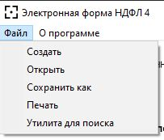
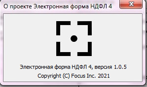

Разделы
Пользовательская инструкция
О программе
Данная программа предназначена для автоматизирования работы бухгалтерского учета по документу "Налоговая декларация о предполагаемом доходе физического лица". Благодаря данной программе пользователь получит возможность на интуитивно понятном уровне работать с программой, заносить в неё данные и получать их сохранение в обработанном виде в файл, загружать данные из файла и сохранять их для печати.Запуск программы
Для доступа к программе в каталоге жёсткого диска C:\Programm должен находиться файл «Электронная форма НДФЛ 4.ехе». Для запуска программы необходимо запустить приложение «Электронная форма НДФЛ 4.ехе».
файл «Электронная форма НДФЛ 4»
главное окно программы
Меню
Для удобства пользователя создано верхнее меню с двумя раскрывающимися пунктами: "Файл" и "О программе".Пункт "Файл" содержит подпункты "Создать", "Открыть", "Сохранить как".
Пункт "О программе" содержит подпункты "Об авторе", "Инструкция".
меню программы

содержание пункта "Файл"
содержание пункта "О программе"
Нажатие на подпункт меню "Об авторе" выведет на экран информацию об авторе программы.

об авторе
Нажатие на подпункт меню "Инструкция" откроет сайт с инструкцией, т.е этот.
Работа с данными
Для работы с данными в программе созданы текстовые поля (для внесения информации о документе).
поля для работы с данными
программа с внесенными в нее данными
Работа с файлами
В данной программе пользователь может сохранять данные в файл формата .txt, просматривать их в самом файле и загружать из файла. Для комфортной работы с файлами в программе существует меню с раскрывающимся пунктом "Файл", которое позволяет сохранять, загружать, создавать и сохранять файлы для печати.Для создания нового файла нажмите на кнопку "Создать". Учтите, что нажатие на эту кнопку сотрет все текущие данные.
Для открытия нажмите на кнопку "Открыть". После нажатия вы сможете выбрать любой подходящий файл.
открытие файла
сохранение файла
сообщение об успешном сохранении